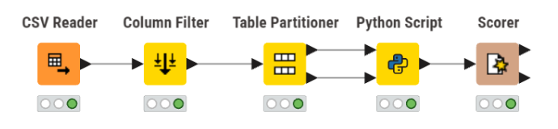
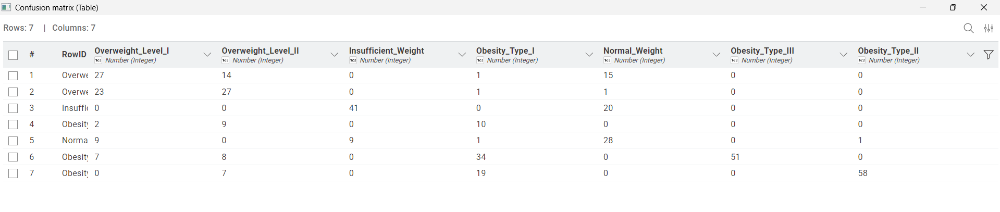

Naive Bayes#
Analisis Data Menggunakan Naive Bayes#
Tugas ini berfokus pada implementasi algoritma klasifikasi Gaussian Naive Bayes menggunakan library scikit-learn dari Python. Sesuai instruksi, penulisan script tidak dilakukan secara mandiri di IDE biasa, melainkan diintegrasikan ke dalam lingkungan KNIME Analytics Platform dengan memanfaatkan eksekusi melalui node Python Script.
Karakteristik Dataset#
Data yang digunakan untuk pelatihan dan pengujian model adalah dataset ObesityDataSet.csv.
Sumber Data: Download ObesityDataSet.csv
Parameter Utama |
Detail Informasi |
|---|---|
Total Baris Data |
2.111 baris |
Jumlah Fitur (Atribut) |
16 kolom (Kombinasi data kategorikal dan numerik) |
Rincian Fitur |
|
Target Klasifikasi (Label) |
|
Kategori Kelas |
• |
Kondisi Distribusi Data |
✨ Cukup Seimbang (Relatively Balanced) |
Preprocessing (Transformasi Data)#
Dataset Obesity memiliki banyak atribut dengan tipe data campuran (kategorikal berupa teks dan numerik). Oleh karena itu, pada tahap preprocessing, dilakukan dua proses utama yaitu Encoding dan Normalisasi agar data siap diproses oleh model Gaussian Naive Bayes menggunakan scikit-learn.
1. Proses Encoding Data#
Karena algoritma pada Python tidak bisa memproses data berupa teks secara langsung (seperti “Male”/”Female” atau “Yes”/”No”), dilakukan teknik Label Encoding menggunakan LabelEncoder untuk mengubah data kategorikal menjadi format numerik. Teknik ini tepat digunakan pada fitur bertipe ordinal dan biner yang memiliki urutan atau hanya dua kategori.
Sebagai contoh representasi:
Gender:
Femalemenjadi 0,Malemenjadi 1SMOKE (Merokok):
nomenjadi 0,yesmenjadi 1NObeyesdad (Target): Diubah dari format teks tingkat obesitas menjadi rentang angka 0 hingga 6.
2. Proses Normalisasi Data#
Setelah semua data berupa angka, skala datanya masih sangat berbeda (contoh: Umur puluhan tahun, Berat Badan seratusan kilogram, Tinggi Badan berupa angka desimal 1.70). Normalisasi dilakukan menggunakan MinMaxScaler yang akan mengubah seluruh rentang angka menjadi skala 0 hingga 1, sehingga distribusi setiap fitur dapat dimodelkan dengan lebih baik oleh Gaussian Naive Bayes melalui estimasi mean dan varians masing-masing fitur.
Catatan: Pada Gaussian Naive Bayes, model mengestimasi mean dan varians setiap fitur secara independen untuk menghitung probabilitas. Berbeda dengan algoritma berbasis jarak seperti KNN, Gaussian NB tidak sensitif terhadap dominasi skala fitur — namun normalisasi tetap disarankan agar asumsi distribusi Gaussian terpenuhi dengan lebih baik.
Seleksi Atribut untuk Demonstrasi Manual#
Seleksi atribut bertujuan untuk menentukan fitur-fitur yang relevan dan akan digunakan dalam proses demonstrasi perhitungan probabilitas Naive Bayes secara manual. Dari 17 atribut yang tersedia, dipilih 4 atribut utama yang mewakili empat tipe data yang berbeda (Numerik, Nominal, Ordinal, dan Biner).
Atribut Yang Digunakan#
No |
Atribut |
Tipe Data |
Alasan Penggunaan |
|---|---|---|---|
1 |
Weight |
Numerik |
Mewakili data angka kontinu dengan rentang nilai yang lebar. |
2 |
MTRANS |
Nominal |
Menunjukkan alat transportasi tanpa urutan tingkatan. |
3 |
CAEC |
Ordinal |
Menunjukkan frekuensi makan dengan tingkatan yang jelas. |
4 |
Gender |
Biner |
Mewakili jenis kelamin dengan dua kategori. |
Atribut Yang Tidak Digunakan#
Atribut lainnya seperti Age, Height, family_history, hingga NObeyesdad tidak digunakan dalam demonstrasi manual ini untuk menyederhanakan proses, meskipun dalam analisis komputasional seluruh atribut dapat dilibatkan.
Hasil Transformasi Data#
Transformasi bertujuan untuk mengubah seluruh atribut ke dalam bentuk numerik dan memiliki skala yang sebanding (0 sampai 1), sehingga distribusi setiap fitur dapat dimodelkan dengan baik oleh Gaussian Naive Bayes melalui estimasi mean dan varians.
1. Encoding Data Kategorikal#
Encoding dilakukan untuk mengubah atribut bertipe kategori (teks) menjadi angka.
Gender (Biner) : Menggunakan binary encoding karena hanya memiliki dua kategori.
Female : 1
Male : 0
MTRANS (Nominal) :
Karena MTRANS bersifat nominal (tidak memiliki urutan), idealnya digunakan One-Hot Encoding untuk menghindari pemberian urutan palsu antar kategori. Namun untuk keperluan demonstrasi manual ini, diberikan label angka unik sebagai representasi sederhana.
Public_Transportation : 0
Walking : 1
Automobile : 2
Motorbike : 3
Bike : 4
CAEC (Ordinal) : Diubah menjadi angka berdasarkan tingkatan intensitasnya (0 sampai 3). Label Encoding tepat digunakan di sini karena kategorinya memiliki urutan yang bermakna.
no : 0
Sometimes : 1
Frequently : 2
Always : 3
Implementasi Alur Kerja (Workflow) KNIME#
Proses analisis ini disusun menggunakan node-based programming di KNIME Analytics Platform. Berdasarkan desain arsitektur yang dirancang, berikut adalah 5 komponen utama yang digunakan dalam workflow:

CSV Reader: Berfungsi sebagai data ingestion untuk mengimpor file
ObesityDataSet.csvke dalam workspace KNIME.Column Filter: Node ini digunakan untuk menyaring fitur sejak awal. Hanya 5 kolom yang diteruskan ke tahap selanjutnya, yaitu 4 atribut prediktor (
Weight,MTRANS,CAEC,Gender) dan 1 atribut target (NObeyesdad).Partitioning: Node ini membagi data yang sudah difilter menjadi dua jalur secara stratified. Jalur atas menghasilkan 80% data latih (training), dan jalur bawah menghasilkan 20% data uji (testing).
Python Script: Merupakan engine komputasi utama. Node ini menerima data latih dan uji, melakukan preprocessing (Label Encoding & Normalisasi), melatih model Gaussian Naive Bayes menggunakan
scikit-learn, dan menghasilkan tabel data uji yang telah dilengkapi dengan kolom prediksi.Scorer: Diletakkan di akhir alur untuk mengevaluasi performa model. Node ini membandingkan kolom target asli (
NObeyesdad) dengan kolom prediksi keluaran Python Script untuk menghasilkan nilai Akurasi dan Confusion Matrix secara visual.
1. Analisis Akurasi (Accuracy Statistics)#

Berdasarkan metrik evaluasi Accuracy Statistics, model Gaussian Naive Bayes yang dibangun menggunakan atribut terbatas memperoleh Overall Accuracy sebesar 0.572 (57.2%). Artinya, dari seluruh data uji, model mampu mengklasifikasikan sekitar 57% data dengan benar.
Jika dianalisis lebih rinci berdasarkan performa tiap kelas:
Performa Tinggi (Baik)#
Obesity_Type_II
Precision: 0.983
Recall: 0.69
Model sangat akurat ketika memprediksi kelas ini.
Obesity_Type_III
Recall: 0.51
F1-Score: 0.675
Model cukup baik dalam mengenali kelas obesitas ekstrem.
Performa Menengah#
Insufficient_Weight
Recall: 0.672
Precision: 0.82
Model cukup stabil dalam mendeteksi kelas ini.
Normal_Weight
F1-Score: 0.50
Performa moderat, masih terdapat kesalahan klasifikasi.
Performa Rendah#
Obesity_Type_I
Precision: 0.152
Recall: 0.476
Banyak prediksi yang tidak tepat.
Overweight_Level_I dan Overweight_Level_II
F1-Score < 0.5
Model kesulitan membedakan kategori overweight.
Selain itu, nilai Cohen’s Kappa sebesar 0.503 menunjukkan tingkat kesepakatan moderate, yang berarti model lebih baik dibandingkan tebakan acak, namun belum optimal.
2. Analisis Confusion Matrix#

Confusion Matrix memberikan gambaran detail mengenai distribusi prediksi benar dan kesalahan model.
Diagonal Utama (Prediksi Benar / True Positive)#
Nilai diagonal menunjukkan jumlah prediksi yang benar untuk masing-masing kelas:
Overweight_Level_I → 27
Overweight_Level_II → 27
Insufficient_Weight → 41
Obesity_Type_I → 10
Normal_Weight → 28
Obesity_Type_III → 51
Obesity_Type_II → 58
Hal ini menunjukkan bahwa model sudah mampu melakukan klasifikasi dengan benar pada setiap kelas, meskipun tingkat keberhasilannya berbeda-beda.
Sebaran Kesalahan (Misclassification)#
Beberapa pola kesalahan yang menonjol:
Kebingungan antar kelas Overweight:
Overweight_Level_I sering diprediksi sebagai Overweight_Level_II (14 data) dan Normal_Weight (15 data)
Overweight_Level_II sering tertukar dengan Overweight_Level_I (23 data)
Kesalahan menuju kelas Obesitas:
Beberapa data Overweight diprediksi sebagai Obesity_Type_I
Kesalahan pada kelas Normal:
Normal_Weight diprediksi sebagai Overweight_Level_I (9 data) dan Insufficient_Weight (9 data)
Pola ini menunjukkan adanya overlap karakteristik antar kelas, terutama pada kategori tengah.
3. Insight dan Kesimpulan Evaluasi#
1. Keterbatasan Fitur#
Model hanya menggunakan beberapa atribut seperti:
Weight
CAEC
Gender
Tanpa fitur penting seperti Height, model tidak dapat menghitung proporsi tubuh (misalnya BMI).
2. Overlap Antar Kelas#
Rentang nilai antar kelas seperti:
Normal_Weight
Overweight
Obesity_Type_I
memiliki irisan (overlap) yang tinggi.
Contoh: Berat 70 kg bisa masuk kategori berbeda tergantung tinggi badan.
3. Kinerja Baik pada Kelas Ekstrem#
Model sangat baik dalam mengenali:
Obesity_Type_II
Obesity_Type_III
Karena pola datanya lebih jelas dan tidak banyak overlap.
4. Kesimpulan Akhir#
Secara keseluruhan, algoritma Gaussian Naive Bayes:
Berjalan dengan baik secara teknis
Mampu mengenali pola pada kelas ekstrem
Masih kesulitan pada kelas dengan karakteristik mirip
Menghasilkan akurasi moderat (57.2%)
Hal ini menunjukkan bahwa performa model sangat dipengaruhi oleh:
Kelengkapan fitur
Tingkat perbedaan antar kelas dalam dataset
Implementasi Script Python (Node Python Script)#
Di dalam node Python Script, dilakukan pengolahan data menggunakan 4 atribut terpilih (Weight, MTRANS, CAEC, Gender). Berikut adalah source code lengkap yang diimplemetasikan
import knime.scripting.io as knio
import pandas as pd
from sklearn.naive_bayes import GaussianNB
from sklearn.preprocessing import LabelEncoder, MinMaxScaler
df_train = knio.input_tables[0].to_pandas()
df_test = knio.input_tables[1].to_pandas()
target_col = 'NObeyesdad'
# AUTO DETECT FEATURE
all_possible_features = ['Weight', 'MTRANS', 'CAEC', 'Gender']
selected_features = [col for col in all_possible_features if col in df_train.columns]
# GABUNG
df_all = pd.concat([df_train, df_test], axis=0).reset_index(drop=True)
# ENCODING AMAN
cols_to_encode = [col for col in ['MTRANS', 'CAEC', 'Gender', target_col] if col in df_all.columns]
encoders = {}
for col in cols_to_encode:
le = LabelEncoder()
df_all[col] = le.fit_transform(df_all[col].astype(str))
encoders[col] = le
# SPLIT
df_train_proc = df_all.iloc[:len(df_train)]
df_test_proc = df_all.iloc[len(df_train):]
X_train = df_train_proc[selected_features]
y_train = df_train_proc[target_col]
X_test = df_test_proc[selected_features]
# NORMALISASI
scaler = MinMaxScaler()
X_train = scaler.fit_transform(X_train)
X_test = scaler.transform(X_test)
# MODEL
model = GaussianNB()
model.fit(X_train, y_train)
# PREDIKSI
y_pred = model.predict(X_test)
# DECODE
if target_col in encoders:
y_pred_text = encoders[target_col].inverse_transform(y_pred)
else:
y_pred_text = y_pred
# OUTPUT
df_output = df_test.copy()
df_output['Prediction_Naive_Bayes'] = y_pred_text
knio.output_tables[0] = knio.Table.from_pandas(df_output)
---------------------------------------------------------------------------
ModuleNotFoundError Traceback (most recent call last)
Cell In[1], line 1
----> 1 import knime.scripting.io as knio
2 import pandas as pd
3 from sklearn.naive_bayes import GaussianNB
ModuleNotFoundError: No module named 'knime'
Demonstrasi Perhitungan Manual Naive Bayes#
Untuk memahami cara kerja algoritma di balik layar (sebelum dieksekusi oleh KNIME), berikut adalah demonstrasi perhitungan probabilitas klasifikasi Naive Bayes secara manual menggunakan 4 atribut terpilih (Weight, MTRANS, CAEC, Gender).
Algoritma Naive Bayes beroperasi berdasarkan Teorema Bayes: $\(P(C \mid X) = \frac{P(X \mid C) \cdot P(C)}{P(X)}\)$
Karena nilai penyebut \(P(X)\) selalu konstan untuk semua kelas, perhitungan dapat disederhanakan dengan mencari nilai probabilitas gabungan terbesar (Maximum A Posteriori): $\(Posterior \propto Prior \times Likelihood\)\( \)\(P(C_i \mid X) \propto P(C_i) \cdot \prod_{k=1}^{n} P(x_k \mid C_i)\)$
1. Skenario Data Uji (Data Dummy)#
Misalkan kita memiliki satu data pasien baru yang belum diketahui tingkat obesitasnya, dengan nilai atribut yang sudah melalui tahap preprocessing (Encoding & Normalisasi) sebagai berikut:
Gender = 1 (Female)
MTRANS = 0 (Public_Transportation)
CAEC = 1 (Sometimes)
Weight = 0.45 (Sudah dinormalisasi)
2. Menghitung Probabilitas Prior \(P(C)\)#
Langkah pertama adalah menghitung seberapa sering masing-masing kelas target (Tingkat Obesitas) muncul di dalam data training. $\(P(C_i) = \frac{\text{Jumlah kemunculan kelas } C_i}{\text{Total seluruh data latih}}\)\( *Contoh:* Jika dari total 1.688 data training terdapat 280 data kelas `Obesity_Type_I`, maka Probabilitas Prior \)P(\text{Obesity_Type_I}) = \frac{280}{1688} = 0.165$. Hal ini dihitung untuk ke-7 kelas obesitas.
3. Menghitung Likelihood \(P(X \mid C)\)#
Langkah kedua adalah menghitung probabilitas setiap nilai atribut pada masing-masing kelas target.
A. Untuk Fitur Kategorikal (Gender, MTRANS, CAEC): Dihitung menggunakan probabilitas diskrit (frekuensi kemunculan).
B. Untuk Fitur Numerik Kontinu (Weight):
Karena Weight adalah data numerik yang diasumsikan berdistribusi normal (Gaussian), probabilitasnya tidak dihitung dari frekuensi, melainkan menggunakan fungsi Probability Density Function (PDF):
Di mana:
\(\mu_{C_i}\) = Rata-rata (mean) atribut Weight pada kelas \(C_i\)
\(\sigma^2_{C_i}\) = Varians atribut Weight pada kelas \(C_i\)
4. Menghitung Probabilitas Posterior \(P(C \mid X)\)#
Langkah terakhir adalah mengalikan nilai Prior dengan seluruh nilai Likelihood fitur untuk masing-masing kelas.
Misal untuk kelas Obesity_Type_I:
Perhitungan ini diulang untuk ke-7 kelas obesitas. Kelas dengan nilai Posterior tertinggi (paling maksimum) akan dipilih oleh model sebagai hasil akhir tebakan tingkat obesitas untuk pasien tersebut.